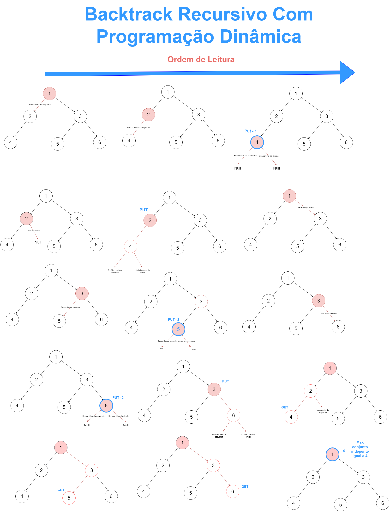

1 - Node {
2 - dados
3 - esquerda
4 - direita
5 -
6 - Node(dados) {
7 - this.dados = dados
8 - this.esquerda = this.direita = null
9 - }
10 - }
11 -
12 - FindMISSize(noRaiz, map) {
13 - if (noRaiz == null)
14 - retorne 0
15 -
16 - if (map.get(noRaiz) != null)
17 - retorne map.get(noRaiz)
18 -
19 - filhoEsquerda = noRaiz.esquerda
20 - filhoDireita = noRaiz.direita
21 - excluir = FindMISSize(filhoEsquerda, map) + FindMISSize(filhoDireita, map)
22 - incluir = 1
23 -
24 - if (filhoEsquerda != null) {
25 - netoEsquerda = filhoEsquerda.esquerda
26 - netoDireita = filhoEsquerda.direita
27 - incluir += FindMISSize(netoEsquerda, map) + FindMISSize(netoDireita, map)
28 - }
29 -
30 - if (filhoDireita != null) {
31 - netoEsquerda = filhoDireita.esquerda
32 - netoDireita = filhoDireita.direita
33 - incluir += FindMISSize(netoEsquerda, map) + FindMISSize(netoDireita, map)
34 - }
35 -
36 - map.put(noRaiz, max(excluir, incluir))
37 - retorne map.get(noRaiz)
38 - }
39 -
40 - buscaMISMap(noRaiz) {
41 - HashMap map = new HashMap()
42 - retorne FindMISSize(noRaiz, map)
43 - }
Para provar a corretude do algoritmo podemos usar a seguinte método de indução para pecorrer a árvore e calcular o MIS:
Assim, queremos provar que P(n) = "FindMISSizeMap(root)" retorna a quantidade de elementos do Conjunto Independente Máximo, para qualquer tamanho da árvore.
Caso Base: Se a quantidade de nós na arvore for igual a 0, ou seja, a raiz da árvore é nula, temos que por conta do condional ele retornará 0. Logo, P(0) vale.
Considere algum n > 0 Hipótese: P(k) vale, para 0 <= K < n.
Dado que, o algoritmo recebe uma árvore que contém sub-árvores, ou seja, com a quantidade de nós > 0, depois da verificação se é nulo, diferentemente do algoritmo anterior, temos também, que passar por uma verificação se o nó atual está contido no map, se não, será possível fazer a chamada recursiva para os filhos da direita e da esquerda do nó atual, caso sejam nulos o primeiro condicional retornará 0 voltará e retrocederá na pilha de chamadas até a instância que invocou as chamadas, caso contrário, farará com que a váriavel excluir receba um valor > 0. Ainda assim, caso não forem nulos, chamará recursivamente até o último nó que contém nós nulos, quando chegar nesse caso será possível incrementar o valor da variável incluir², para assim, demonstrar que esse é um nó independente. Ademais, vai ser verificado se os filhos da direita e da esquerda atual são nulos, se não forem nulos, irá ser possível incrementar o valor chamando recursivamente os netos da esquerda e da direita do nó atual, se ouver netos não nulos, irá retornar valores > 0 incrementendando, assim, a variável incluir. Depois disso, é possível inserir no map o nó atual como chave e como valor o resultado maior da comparação entre as váriaveis incluir e excluir da contagens de filhos e netos, por fim é retornado o valor da chave atual para as intância que chamaram recursivamente a função. Desse modo, esse processo ajuda a recuperar nós que já foram vistos, e não precisar chamar recursivamente para verificar filhos e netos novamente, agializando assim, a verificação do algoritmo. Portanto, podemos provar que o algoritmo tem execução finita e retorna a quantidade de elementos e, desse modo, P(k) vale também nesse caso.
